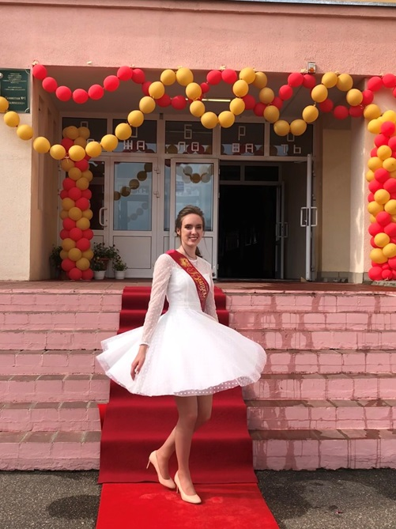
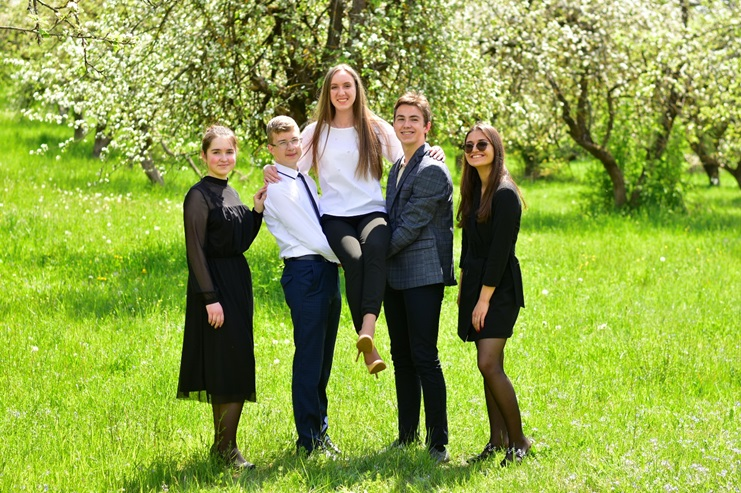
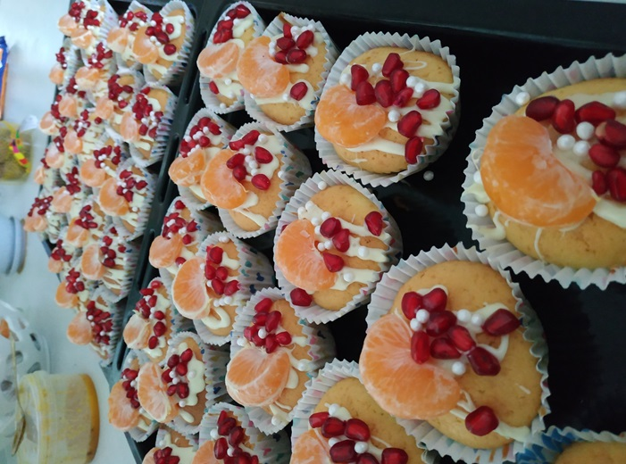
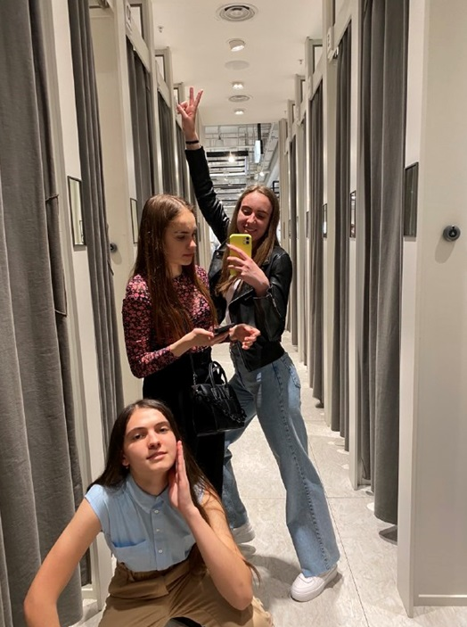
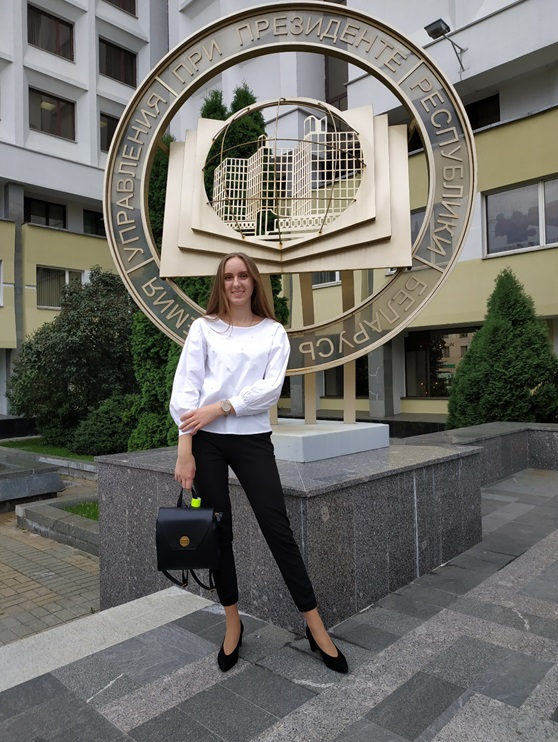
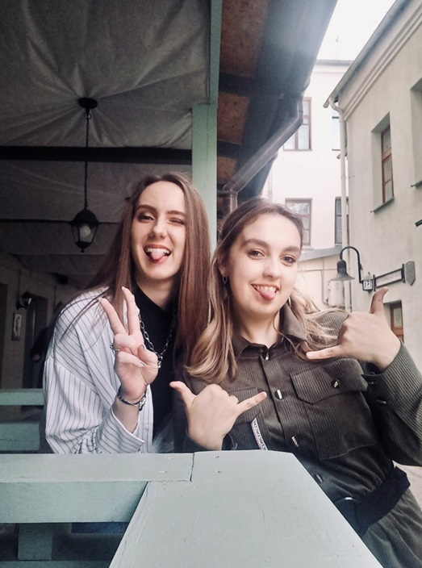

Старостенко Полина Владимировна студентка Академии управления 2-ого курса группы УИР-2. Родилась 19.08.2003.
Полина
Старостенко
Старостенко

С самого детства была очень активным ребенком и просыпалась всегда в 5 утра. Кстати, говорить Полина начала очень рано и в 2 годика уже рассказывала стишки. Все думали, что она будет работать ведущей на телевиденье так как всегда много болтает.
Закончила «Гимназию №1 г. Воложина». Школьная жизнь у Полины была очень насыщенная и весёлая. Всегда выступала на различных мероприятиях. Очень часто была ведущей. С 1 по 7 класс занималась танцами и выступала на Дожинках. Потом занималась 3 года пением. И в 8 классе открыла для себя баскетбол и очень втянулась. Ездила на соревнования. Баскетбол закончился, но Полина продолжает заниматься спортом.


Обожает готовить. У Полины был даже заказ на юбилей. Пекла 50 кексиков.
Помимо этого, с 3 по 11 класс ходила в международную молодёжную волонтёрскую организацию YMCA. К ним часто приезжали ребята с других стран и делились своим опытом, проводили тренинги. И они ездили в Германию как волонтёры по различным программам. Ещё Полина закончила музыкальную школу по классу фортепиано.


